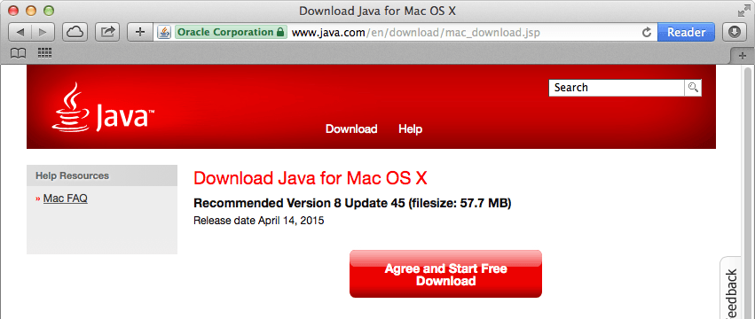

Install Java
Eclipse depends on either a Java Runtime Engine (JRE) or Java Development Kit (JDK). Check if you have Java installed and, if you do not, install it.
Platform-specific instructions:
Windows
If you do not know if you have Java installed, refer to How can I find which version of Java is installed without running an applet in Windows or Mac? on java.com for instructions.
- Download the Oracle distribution of a Java JRE or JDK from oracle.com/technetwork/java/javase/downloads/index.html.

Mac
A Java runtime ships with the Mac operating system however, if you are running OS X 10.9.4 or older, you may need to update your version of Java.
- If needed, download the Oracle distribution of Java for Mac from java.com/en/download/mac_download.jsp.

Linux
-
Check if you have Java installed.
-
Open a Terminal window.
-
Type:
javaIf you see a “The program ‘java’ can not be found” message, you do not have Java installed and you will need to install it.
-
-
Install a Java runtime using the
apt-getcommand. You may need to enter your user password.
sudo apt-get install default.jre